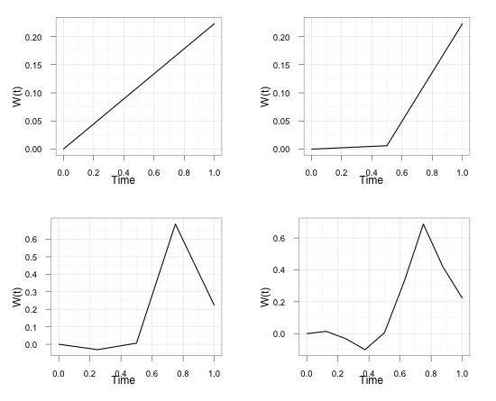

Generar un movimiento browniano usando puentes brownianos

Supongamos que conocemos la posición de un movimiento browniano a los tiempos \(u\) y \(t\), \(W(u)=x\) y \(W(t)=y\), entonces la distribución del movimiento Browniano condicionado a este hecho se le conoce como puente browniano para los tiempos \(u < s < t\). Más aun, la distrbución de la variable \(W(s)\mid W(u)=x, W(t)=y\) es normal con parámetros
\[ \mu=\frac{(t-s)x+(s-u)y}{t-u} \] \[ \sigma^2=\frac{(s-u)(t-s)}{(t-u)} \]
Como el objetivo es simular trayectorias del movimiento en un segmento \([0, T]\) se puede hacer lo siguiente. Primero generar un valor para \(W(T)\) para después tomar el punto medio, \(T/2\), y ahí generar un nuevo valor a partir del hecho que en el tiempo 0 y \(T\) ya se conoce la posición del movimiento Browniano, es decir el nuevo valor sigue la distribución del puente Browniano. Después seguir este procedimiento en cada una de las dos partes que se forman, \([0,T/2]\) y \([T/2,T]\), y continuar así tantas veces como se desee.